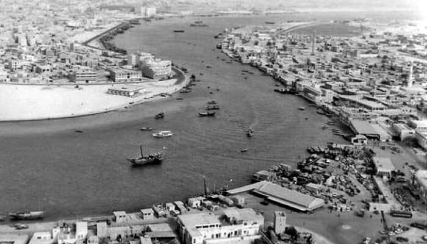

Dubai Culture and Language
The history and culture of Dubai is deeply rooted in Islamic traditions that shape a UAE national's lifestyle. It is important to note that when tourists visit Dubai they must respect the culture and behave accordingly, as minority groups in the Emiratis are very protective of their Islamic culture and traditions. Dubai is famously known as the entertainment capital of the Middle East which attracts many party lovers from all over the world, especially those who are wealthy enough to splurge on the most expensive places in the city. While Dubai has cultivated this image for its tourists, it still discourages its Islamic nationals to indulge in many of the entertainment services offered. Hence, these services are often located in the more touristy areas rather than in residential parts is not forbidden in Dubai, as long as it is confined within the designated areas in hotels, bars or nightclubs. Residents are free to drink in their own homes as long as they have an alcohol licence issued by the municipality. It is illegal to drink in the street or in other public places. Pork is also available for the consumption of visitors and expatriates. It is advised that visitors and expatriates do not flaunt their Western culture habits in the streets, where they can be viewed by conservative nationals who may find it offensive. Having said this, it does not mean the locals are against foreigners visiting Dubai, it is just common courtesy to respect your hosts. Emiratis are traditionally known for their warm hospitality and they are very generous when offering refreshments to guests. Remember, when in Rome, do as Romans do.
The official language of the country is Arabic, however most people in and out of the workplace communicate in English. There are so many different nationalities in Dubai and therefore English finds common ground with most people. The majority of road, shop signs, and restaurant menus etc. are in both English and Arabic.
Religion
Dubai, like the rest of the UAE is an Islamic Emirate and once in the city you are surrounded by many mosques and the call of prayer will be heard frequently. The most religious time of the year in Dubai is the Holy Month of Ramadan, which lasts for approximately 30 days. This is when Muslims fast during daylight hours to fulfil their duties to the fourth pillar of Islam. Tourists must be aware that during this period, eating, drinking and smoking is not permitted in public during the day, although some restaurants blackout their windows to allow people to consume food and beverages in private. Bars will not serve alcohol before 7.00pm and nightclubs are shut as no loud music is allowed. However, the UAE is tolerant and welcoming to foreigners who do not practice Islam. The government follows a policy of tolerance towards non-Muslims and Polytheist and in practice, interferes very little with their religious activities. The huge Arab population in Dubai includes many from Middle-Eastern countries which follow the Christian faith and non-Muslim expatriates. They are freely allowed to practice their own religion as long as they do not publicly distribute literature. In fact, Dubai has other religious places of worship, such as churches, gurdwaras and temples. The Meena Bazaar area of the city has both a Shiva and Krishna temple. Both are believed to be sanctioned by the late ruler of Dubai, Sheikh Rashid Bin Saeed Al Maktoum.
The Evolution of Dubai
Sheikh Zayed Road In 1990 Vs Now


Dubai Marina In 2000 Vs Now


Dubai Creek In 1950 Vs Now


Historical Timeline leading to the rise of Dubai
1830: The small fishing settlement of Dubai is taken over by a segment of the Bani Yas tribe from the Liwa Oasis, led by the Maktoum family who still, interestingly, rule the emirate today.
1892: Foreign traders are drawn into Dubai due to the declaration that they will be exempt from tax, the population doubles and the pearling industry is now booming.
1930-1940: The recession hits Dubai’s pearl industry which falls into decline leading to social pressures and feuds between the royals.
1958: Sheikh Rashid officially becomes the ruler of Dubai after his father’s death.
1959: The Emir of Kuwait lends Sheik Rahid millions of dollars to renovate the Creek so it can accommodate large ships in order to develop Dubai’s reputation as being a major trading hub.
1966: Dubai discovers its own oil, attracting traders to settle in Dubai which in turn enhances economic growth.
1968: Dubai begins exporting crude oil and petro-dollars rush in.
1973: The Dirham becomes the offical unit of currency in Dubai.
1980: Dubai’s annual oil income decreases to US$3.
1985: The Emirates airline is established and Dubai plans its reinvention as a tourist destination.
1990: Sheik Maktoum takes over as the ruler of Dubai, due to his father, Sheik Rashid, passing away during the first Gulf War.
1996: The Dubai shopping festival and the Dubai World Cup are launched and happen to become very popular annual events.
1999: One of the tallest hotels in the world, the Burj Al Arab opens, enhancing Dubai’s reputation further as a tourist destination.
2003: Dubai is recognised by The International Monetary Fund and the World Bank, as a financial hub. Also, at this time the property market in Dubai suddenly grows due to the introduction of freehold properties.
2006: Sheik Mohammed becomes the Prime Minister and Vice President of the UAE, as well as the ruler of Dubai. He updates the Liberal policies of his Maktoum forefathers and develops Dubai further, raising the city’s business profile.
2007: Sheikh Mohammed announces the Dubai Strategic Plan 2015 as well as the inauguration of Dubai Studio City takes place. Dubai World Cup prize money was raised to $10 million and Dubai International City is built.
2008: New Maktoum Bridge opened along with Dubai Sports City and Dubai International Terminal 3. The Atlantis, The Palm hotel & resort is launched.
2009: Dubai Mall, the world's largest shopping mall is inaugurated along and Red Line (Dubai Metro) begins operations. Also Dubai International Cricket Stadium opens.
2010: Burj Khalifa, the world's tallest skyscraper opens and Al Maktoum International Airport starts operating.
2011: Dubai Metro begins operating Green Line as well as Palm Deira station.
2012: Princess Tower and JW Marriott Marquis Dubai are built as Dubai bids for World Expo 2020.
2013: Dubai wins bid for World Expo 2020 and Sheikh Mohammed announces the Dubai Water Canal.
2014: Mall of the World, the world's largest mall and indoor theme park announced and Opera Grand, the first high-rise in the Dubai Opera House District opens.
2015: UAE develops Mars probe named Hope.
2016: Sheikh Mohammed inaugurates the Dubai Water Canal.
2017: Dubai Safari Park is opened to public.
2018: Dubai Frame, World's largest frame opens in 2018.
2019: Construction of Burj Jumeirah commences.